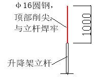

| 中国建筑 项目管理表格 | |||||||||||||||||||||||||||||||||||||||||||||||||||||||||||||||||
分项工程技术交底卡 | 表格编号 | |||||||||||||||||||||||||||||||||||||||||||||||||||||||||||||||||
CSCES-PM-0803 | ||||||||||||||||||||||||||||||||||||||||||||||||||||||||||||||||||
项目名称及编码 | 平顶山高新区湛南棚户区村庄改造项目B区 | 共 6 页 第 1 页 | ||||||||||||||||||||||||||||||||||||||||||||||||||||||||||||||||
楼栋号 |
| 分项工程名称 | 附着式提升脚手架使用注意事项 | |||||||||||||||||||||||||||||||||||||||||||||||||||||||||||||||
分包公司 |
| 负责人 |
| |||||||||||||||||||||||||||||||||||||||||||||||||||||||||||||||
一、附着式提升脚手架的使用与维护 1、 使用荷载 架体使用时，二步架使用时脚手板活荷载应小于3kN/m2 ，三步架同时使用时脚手板活荷载小于2kN/m2 ，严禁超载使用，荷载应尽量分布均匀，避免过于集中，局部集中荷载≤500kg。 2、架体在使用中必须与建筑物进行临时的连接、支撑，防止架体顶部晃动过大。 3、架体的维护保养 为了保证升降架的正常使用，避免事故隐患，应定期对升降架进行维护和保养。 1) 升降架每次升降前，施工班组应对所升降的架体的固定导向座的附墙螺栓进行检查，螺杆露出螺母端部的长度不得小于3扣或不小于15mm，发现问题应及时解决和更换，由工程部验收签字后方可进行升降。 2) 定期对电动葫芦进行维护保养，加注润滑油，检查电动葫芦自锁装置，链条情况，检查传力倒链环链情况等。 3) 检查构件焊接情况，悬挂端下沉情况，扣件松紧情况等。 4) 检查吊挂件、倒链环链的松紧情况等。 5) 检查控制分机、重力传感器及自动控制线路，确保能正常使用。 4、使用注意事项 （1）管理人员必须对架体进行严格检查后方能投入使用。 （2）主体施工阶段允许有2层作业层施工，每层最大允许施工荷载3kN/m2。外墙装饰施工期间允许有3层作业层施工，每层最大允许施工荷载2kN/m2。 （3）使用时只能作为操作架，不得作为外墙模板支模架。 （4）严禁利用脚手架吊运重物，在架体上推车，在架体上拉结吊装缆绳。 （5）严禁任意拆除提升脚手架部件和穿墙螺栓，起吊构件时碰撞或扯动外架。 外架不得超载使用，不得使用集中荷载。 二、防电措施 升降平台是由方钢管等金属构件搭设而成，它们都是良导电体，所以，在高、低压线路下方均不得搭设升降平台。升降平台的外侧边缘与外电架空线路的边线之间必须保持安全操作距离。最小安全操作距离应不小于下表所列数值。
注：斜道严禁搭设在有外电线路的一侧。 当条件限制达不到规定的最小距离时，必须采取防护措施，如增设屏障或防护架等，并悬挂醒目的警告标志牌。 1、严格用火管理； 2、严禁现场吸烟； 3、升降架体周围严禁存放易燃材料； 4、应每班清理可燃物； 5、电气安装必须符合（规程），不得乱拉电源线； 6、应配备足够的轻便灭火器材； 7、应随时检查、发现并消除火险隐患； 全钢附着式提升脚手架是高耸的金属构架，又紧靠在钢筋混凝土结构之旁，二者都是极易遭受雷击的对象，因此避雷措施十分重要。 1、全钢附着式提升脚手架若在相邻建筑物、构筑物防雷保护范围之外，则应安装防雷装置，防雷装置的冲击接电电阻值不得大于30Ω。 2、避雷针是简单易作的避雷装置之一，它可用直径25～48mm，壁厚不小于3mm的钢管或直径不小于12 mm的圆钢制作，顶部削尖（如下图），设在房屋四角全钢附着式提升脚手架的立杆顶部上，高度不小于1m，并将所有最上层的大横杆全部接通，形成避雷网络。 3、在建筑电气设计中，随着建筑物主体的施工，各种防雷接地线和引下线都在同步施工，建筑物的竖向钢筋就是防雷接地的引下线，所以当全钢附着式提升脚手架一次上升工作完成时，在每组架上只要找一处，用直径大于16mm的圆钢把架体与建筑物主体结构的竖直钢筋焊接起来（焊缝长度应大于接地线直径的6倍）。使架体良好接地，就能达到防雷的目的；或者采用一根5米长电缆线将架体和建筑物接地线连接起来即可，每次提升到位后立即将电缆线接到上一层的接地线上。 4、当全钢附着式提升脚手架处于下降状态时，架体已处在楼顶避雷针的伞形防雷区内，故无需在提升架上再另设防雷装置 。 注意事顶：在每次升架前，必须将全钢附着式提升脚手架架体和建筑物主体的连接钢筋断开，置于一边，然后再进行提升。提升到位后，再用连接圆钢筋把架体和主体结构竖向钢筋焊接起来。所有连接均应焊接，焊缝长度应大于接地线直径的6倍，不得马虎。 5、在施工期间如遇有雷雨天气，提升架上的所有人员应立即对架体简单加固后，撤离脚手架进入楼层内。 五、施工过程中的危险源辨识与分析 附着升降脚手架的危险源应从搭设、上升、拆除整个过程来辩识危险源，危险源辩识出后应对隐患进行排除并制定应对措施。 1、脚手架整个过程中应辩识以下危险源： 1）底部操作平台的基础是否牢固，是否需要增加拉结点和斜撑卸荷杆件。 2）高空作业人员是否佩带了安全带、工具包及防滑鞋，架上堆放的物料是否稳固可靠，特别是短钢管扣件，以防坠人坠物。 4）吊装时左右是否设置了临时吊装杆件，是否安装牢固可靠。 6）安装附着导向座时混凝土是否达到强度要求，附着螺栓组件的安装是否符合要求，承传力是否可靠。 7）防坠器的是否灵活，吊挂系统是否牢固可靠。 8）架子提升时，是否有无关人员进入架子，架上的物料是否已清除，架体下方是否设置的警示牌警戒线禁止人员进入。 9）是否在或六级（含六级）以上大风和大雨、大雪、浓雾和雷雨等恶劣天气进行架子提升和拆卸。 10）料台的设置是否合理，受力是否直接在结构上，料台有没有限载标志。 11）附着导座的数量是否符合要求，安装是否规范，承传力是否可靠。 12）各机位高差是否在安全范围以内。是否出现变形或高差过大情况。 13）架体提升过程中，是否遇到刮卡或拉力突增、减等情况。 14）电动葫芦在使用过程中是否出现异响或打滑情况，葫芦链条是否有咬伤情况。 15）架体每次提升后底部封闭是否可靠，立面和断开面的封闭是否严密。 16）总电箱开关的操纵是否是指定的专人，电器线路的维护驳接是否是指定的专人。 17）任何架体的拆除过程中，是否先拆除了拉结连墙点或附着件，是否设置了警界区域并派专人看管。 18）在外架上作业时，禁止乱扔烟头、冬天禁止烤火、在电焊和切割时，应防止火星四溅，设置接火盆，确保防火安全。 19）应安全文明用电，严禁在脚手架上私自架设动力、照明电源线。确保用电安全。防止触电事故发生。 2、针对以上各环节的危险源制定相应的控制措施：按照公司操作规程，对每个环节由搭设班长或升降班长先初步检查，对检查出的问题进行整改。然后由现场施工员对每个环节再进行复查，并对检查的隐患进行整改。再由安全督察对每个环节检查，并安排专人进行整改。最后由生产负责和安全负责抽查。发现问题及时整改。通过以上每个环节的检查，确保每个危险源得到及时的辩识和控制。 危险源辨识与控制措施
危险因素及分析
六、季节性施工安全技术要求 夏季高温天气施工，工人应注意防暑降温。根据天气预报发布的高温预报，适时调整露天作业时间，避开高温照射时段。避免因高温引发连锁事故；项目部针对员工高温作业配备如下生活用品：生活用房间配置降温设施，保证工人舒适休息；施工现场及作业楼层配备防暑药品和防暑饮料。高温天气易引发火灾事故，应加强易燃物品（如油漆、等）的防晒降温管理。 冬季施工混凝土的强度必须达到C20才能对脚手架进行升降作业。混凝土的强度由项目负责及时出具相关资料作为依据。冬季施工应注意灾害性天气的信息发布，及时防范冻雨、暴雪的危害。 施工期间，工地应有专人负责发布气象资料，每天通报全体施工人员，以便安排工作和及时采取措施。及时掌握雷电天气，实施雷电预警。对施工人员进行防雷安全知识教育与安全培训。 （1）雷雨天气和五级以上大风应停止架上作业。同时要安装水平支顶拉接钢管等安全装置，大风过后要对架上的脚手板、安全网等认真检查一次。 （2）本地区雨季、大风施工期间，总包委派专人负责天气预报，每天通报全体施工人员，以便安排工作和及时采取措施；大风过后对爬架垂直度、主要承力件、螺栓螺母进行逐件检查；及时恢复风前拆除防护设施，并由总包、监理、分包共同验收合格后方可投入使用。 附着升降脚手架的电器拖动系统在阴雨天气里极易返潮，发生短路从而导致整个电器系统瘫痪，无法保证升降脚手架的正常提升，为了避免此类事情发生，总包方应采取以下措施： 1、输电线路应穿管，沿架体外排敷设，用尼龙带与钢网牢固绑扎； 2、线管内的导线必须完好、无接头，否则容易发生短路的危险，并难以查找故障源，如无法避免一定要将接头位置用绝缘、防水胶带完全密封； 3、 每一个小控制箱和大控制器必须制作防护箱，防止雨水的进入。 4、当下完雨时不宜马上提升，待电器设备里的水蒸气挥发干后再开始提升。 七、疫情防控措施1、服从项目部关于疫情防控的封闭式管理和其它管理； 2、配合项目部卡点测体温、登记等工作； 3、必须佩戴口罩。施工现场所有人员都要做好个人防护措施，必须佩戴口罩。 4、宿舍保持通风换气，尽可能打开门窗通风换气； 5、必须做到垃圾无害化处理，口罩丢弃在专用收集箱； 6、服从项目部安排的分餐、错时用餐安排，自觉在人少时候就餐； 7、避免人群聚集，人与距离保持1m以上； 8、注意个人卫生，加强个人防护，避免感冒、发烧。 | ||||||||||||||||||||||||||||||||||||||||||||||||||||||||||||||||||
交底人 |
| 交底日期 |
| |||||||||||||||||||||||||||||||||||||||||||||||||||||||||||||||
被交底人 |
| |||||||||||||||||||||||||||||||||||||||||||||||||||||||||||||||||